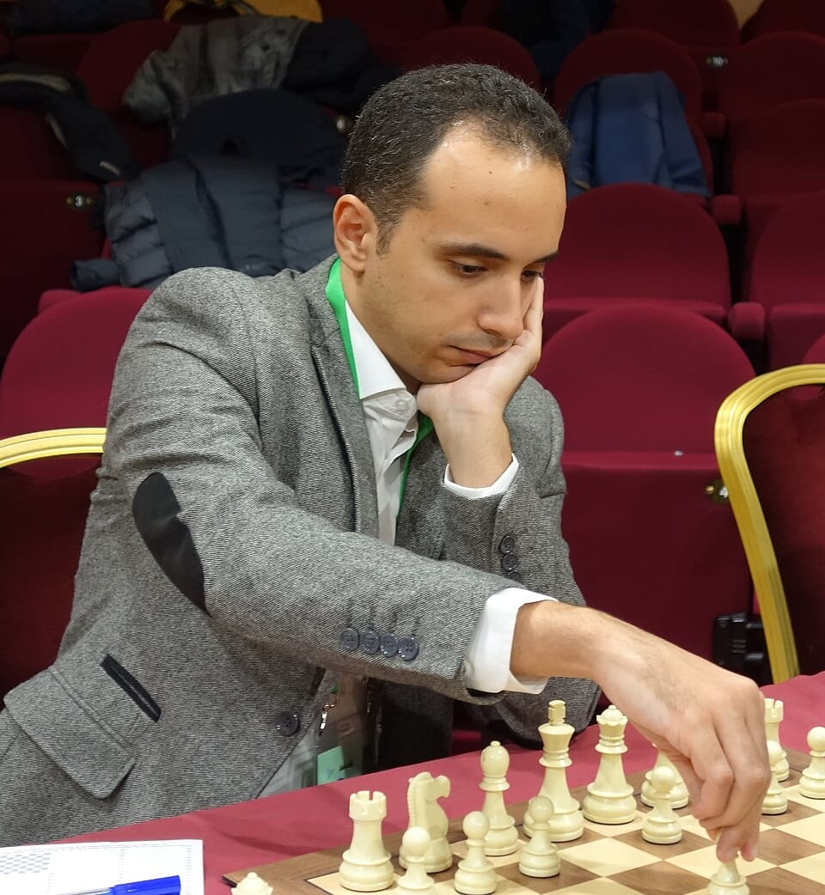

Chess in Egypt has a surprisingly rich and growing scene,blending history, strong local talent, and increasing international presence.
DR/Bassem Samir Amin (born September 9, 1988 in Tanta) is an Egyptian chess grandmaster and physician.
He was awarded this title by the International Chess Federation (FIDE) in 2006.
His international rating is 2622, the highest rating in the history of Egypt, the Arab world, and Africa,
and he is the only physician to have a rating exceeding 2700.
Amin has won the African Chess Championship seven times (2009, 2013, 2015, 2017, 2018, 2022, and 2024),
the Arab Championship three times (2005, 2006, and 2013), the Mediterranean Championship title, and two World Under-20 bronze medals.
